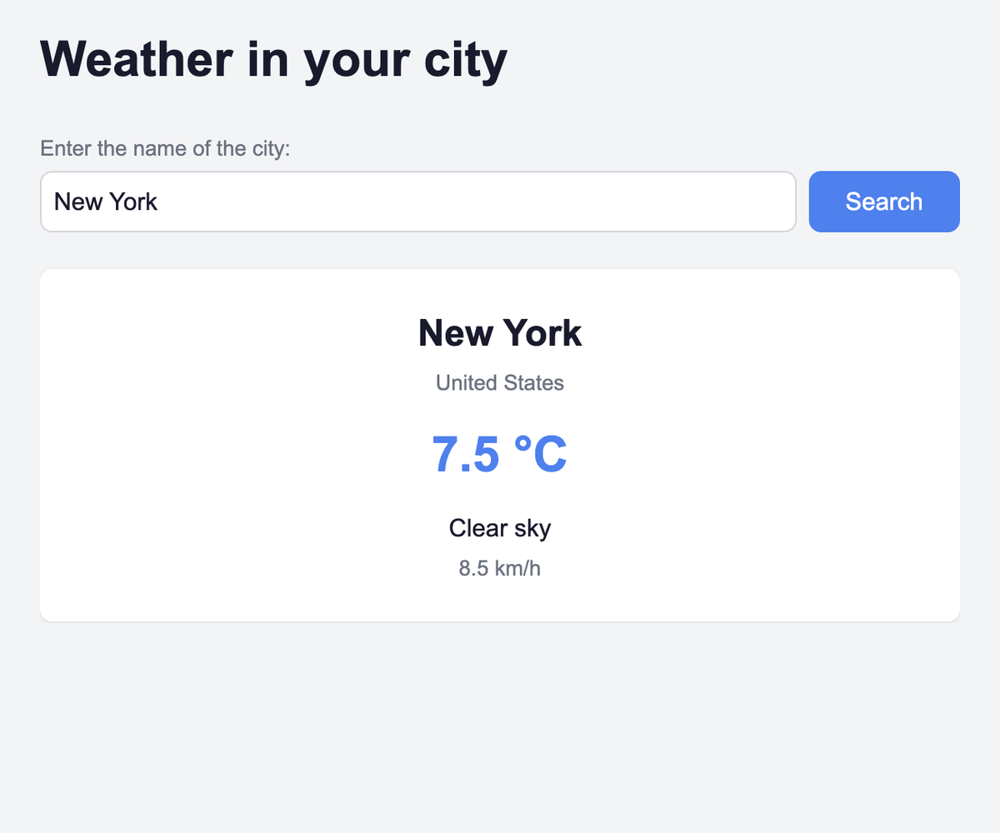

Weather App
A weather app that finds any city and shows current conditions from the Open-Meteo API.

About the project
Type a city name and get the current temperature, weather description and wind speed. Because city names are rarely unique — "Most" exists in Czechia, Mongolia and the Netherlands — the app first shows a list of matching locations and lets you pick the right one.
Built with vanilla JavaScript, no frameworks or libraries.
Challenges
-
Chaining two dependent requests
The weather API only accepts coordinates, not city names. So the app makes two requests: geocoding turns a name into coordinates, then those coordinates go into the weather request. The result of the first request feeds the second.
-
Ambiguous city names
Searching "Most" returns five different places across the world. Rather than silently picking the first match, the app renders the options as buttons — each carrying its own coordinates in data attributes — and waits for the user to choose. Only then does it fetch the weather.
-
A successful response with no results
response.okdoesn't catch everything. When a city isn't found, the geocoding API still returns status 200 — just without a results array. That case needs its own check, separate from network errors.
Built with
- JavaScript (ES modules)
- Fetch API
- Open-Meteo API
- SCSS
- BEM
- Vite
- GitHub Actions